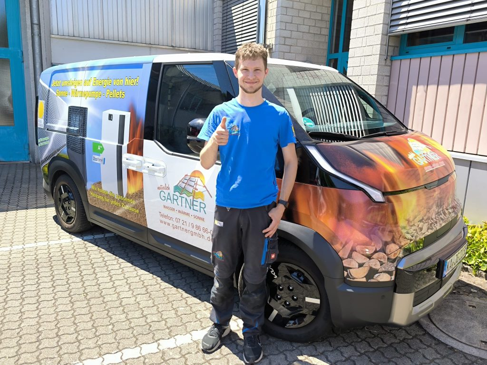

Gartner GmbH · Karlsruhe
Energie.
Wasser.
Persönlich.
Die öffentliche Gartner-Website verbindet aktuelle Kundendienstthemen mit Wasser-, Energie- und Heizungsangeboten sowie einem persönlichen Teamauftritt.
Aktuelle Themen ansehen ↓Schenkenburgstr. 9 · 76135 Karlsruhe0721 986660

Aktuelles
Was den Betrieb bewegt.
Das Konzept bringt aktuelle, öffentlich belegte Inhalte an den Anfang, statt sie tief in einem News-Archiv zu verstecken.
Elektroauto im Kundendienst
Viwa-Brunnen
Team & Referenzen
Menschen bei Gartner
Handwerk hat ein Gesicht.
Die Geschäftsführungsaufnahme stammt direkt aus dem aktuellen Gartner-Auftritt. Im Konzept rückt sie die Menschen hinter den öffentlich sichtbaren Bereichen Team, Referenzen und Service in den Mittelpunkt.
Kontakt
Direkt.
Ohne Umweg.
Die öffentlich veröffentlichten Kontaktwege sind für Anfragen klar platziert. Notfall- und Öffnungszeiten werden vor einer externen Veröffentlichung verbindlich geprüft.
Telefon0721 986660
E-Mailinfo@gartnergmbh.de
AdresseSchenkenburgstr. 9
76135 Karlsruhe
76135 Karlsruhe
[NEEDS INPUT: aktuelle Öffnungszeiten, Notfallprozess und rechtliche Angaben vor Veröffentlichung bestätigen.]